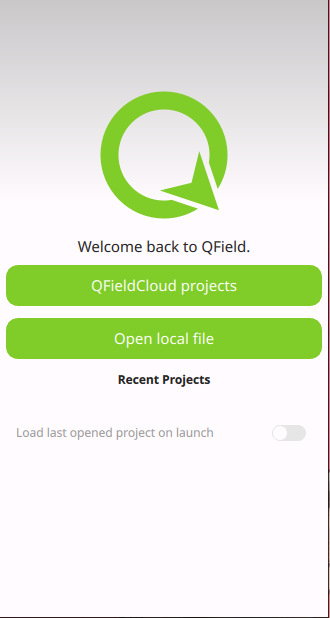
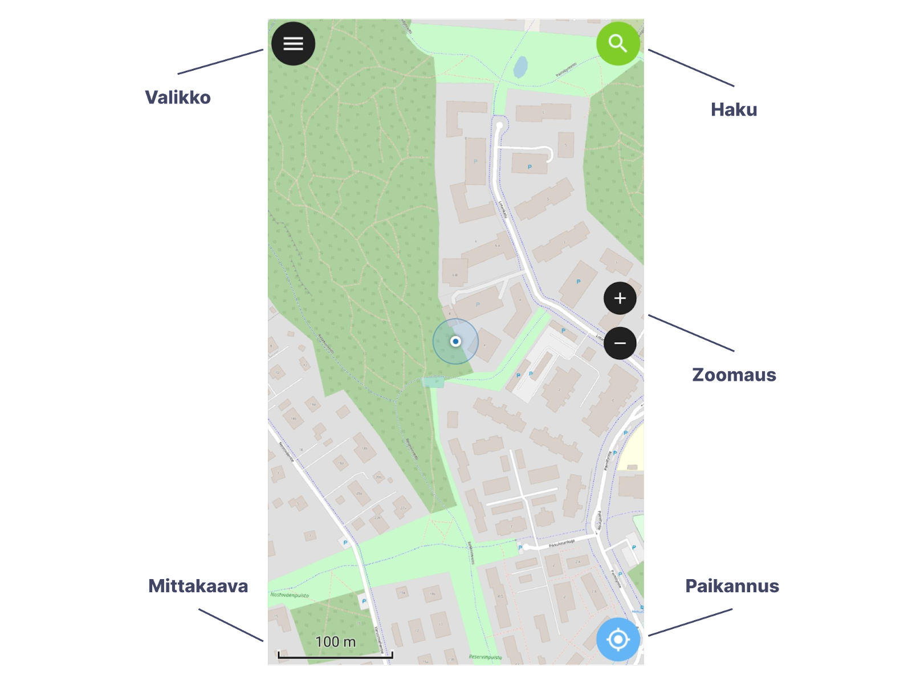

QFieldin peruskäyttö
Kun avaat QFieldin puhelimella niin oletusnäkymä näyttää suunnilleen tältä:

Valitse "Avaa paikallinen tiedosto" ("Open local file") ja paina seuraavaksi käyttöliittymän oikean alareunan vihreää plus-ikonia, valitse "Tuo projekti hakemistosta" ja navigoi laitteesi sijaintiin, jonne QGIS-lisäosalla tehdyn QField-paketin lisäsit. Klikkaa alareunasta "Käytä tätä kansiota" ja "Salli". Tätä kautta annetaan QFieldille käyttöoikeus kyseiseen sijaintiin (Lisätietoa: dokumentaatiosta). Valitse kansiosta projektitiedosto, ja klikkaa siitä projekti auki. Jatkossa projektin pystyy avaamaan ilman näitä välivaiheita.
Yleistä QFieldin käyttöliittymästä
QFieldin käyttöliittymä on tilannekohtainen. Oheisessa havainnekuvassa nähdään QField selailu-tilassa, jolloin ainoat näkyvät komponentit ovat:
-
Päävalikko: mm. kartta-tasot ja -teemat, asetukset sekä selailu-/muokkaus-tilan valinta.
-
Haku-toiminto: voi hakea kohteita projektin vektoritasoista sekä sijainteja esimerkiksi koordinaattien tai osoitteen perusteella (osoitehaku toimii vain osoitteille Suomen alueelta, perustuvat Digiroadiin).
-
Zoomaus-painikkeet: lähennys ja loitonnus. Kartalla zoomaus toimii myös kahden sormen eleitä käyttämällä kuten mobiililaitteiden karttasovellukset yleensäkin.
-
Paikannus: kun aktivoit paikannuksen, karttapohja seuraa sijaintiasi ja keskittää siihen.
-
Mittakaava-jana

Asetukset
Klikataan sovelluksen vasemmasta yläreunasta Valikko auki, aukeavasta valikosta Asetukset (rattaan kuva) > Asetukset (tai Settings).
Yleistä (General)-välilehdellä voit konfiguroida QFieldin käyttöliittymää sopivaksi. Tässä muutamia ehdotuksia käyttöönotettaviksi:
-
Lähes alas asti vierittämällä löytyy asetus Kieli (Language), josta voit vaihtaa kielen esim. suomeksi (vaatii sovelluksen uudelleen käynnistämisen).
-
Laajin attribuuttilomake: kätevä käytössä, kun paljon täytettäviä attribuuttitietoja ja pieninäyttöinen laite.
-
Näytä digitointitiedot: koordinaatti- ym. tiedot digitointia suorittaessa.
Pyyhkäisemällä asetus-valikkoa vasemmalle päädytään Paikannus-välilehdelle, joka on hyödyllinen varsinkin ulkoisia paikannuslaitteita käytettäessä. Täältä voi laittaa esimerkiksi tarkkuusindikaattorin aktiiviseksi, jolloin digitoitaessa näkee suoraan paikannuksen luotettavuuden.
Käyttäjänimen lisäys: siirry asetus-valikossa tämän jälkeen oikeanpuolimmaiseen Muuttujat-välilehteen. Sieltä näkee sekä tietyt QGISin versio- ym. muuttujat että mobiililaitteen käyttöliittymän muuttujat. Täällä voi myös määritellä omia muuttujia, ja lisätään nyt käyttäjänimi, jotta muokkaustiedot tulevat automaattisesti talteen digitoitaessa QFieldilla:
- Klikkaa alareunan Lisää uusi muuttuja, ja anna muuttujalle nimeksi username sekä arvoksi oma nimesi ja/tai laitteesi nimi.